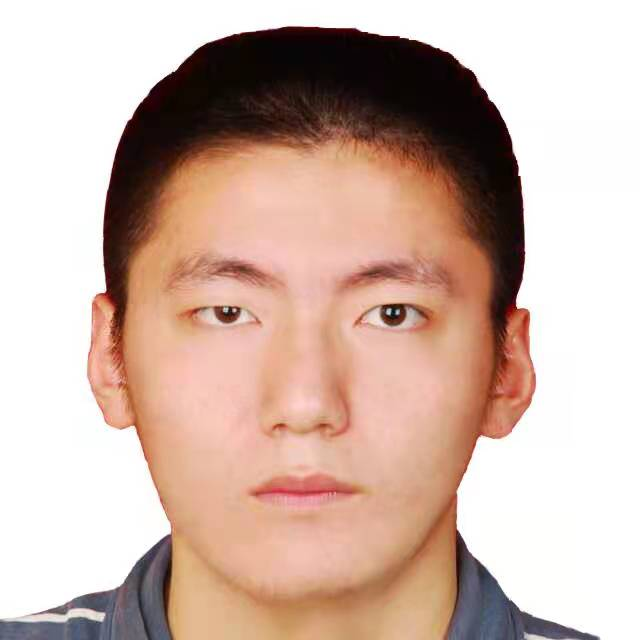

Siwei Wang
Home
|  |
Siwei Wang
P.h.D Candidate
Email: wangsiwei13@nudt.edu.cn (prior); 1551976427@qq.com |
I'm a researcher of machine learning and data mining, especially on optimization theory, multi-view clustering and deep clustering. Currently, I focus on the following research topics:
-
Multi-view clustering/fusion
-
Large-scale Graph Learning
-
Optimization theory on Riemannian Manifold
-
Deep clustering with Optimal Transport (OT) / Mutual Information (MI)
-
UAV study
We have built a comprehensive awesome-multi-view-clustering-repository (here). We have also built a data repository for large-scale data (here). Don't hesitate to contact me: wangsiwei13@nudt.edu.cn.
We have published several papers in those highly-recommended journals/conferences(TPAMI/TKDE/TIP/TMM/TNNLS/ICML/CVPR/ICCV/AAAI/IJCAI/ACM MM/WWW). I'm looking for help with passionate students who are interesting in this filed!
We have also cooperated with famous companies as well (including Tencent and JD). We look for students with strong mathematical foundation and coding skill.
Representative Papers
 |
Align then Fusion: Generalized Large-scale Multi-view Clustering with Anchor Matching Correspondences. Wang, S., Liu, X., Liu, S., Jin, J., Tu, W., Zhu, X., Zhu, E. In NeurIPS, 2022. [Paper] [Code] |
 |
One Pass Late Fusion Multi-view Clustering. Liu, X., Liu, L., Liao, Q., Wang, S., Zhang, Y., Tu, W., Tang, C., Liu, J., Zhu, E. In ICML, 2021. [Paper] [Code] |
 |
Highly-efficient Incomplete Large-scale Multi-view Clustering with Consensus Bipartite Graph. Wang, S., Liu, X., Liu, L., Tu, W., Zhu, X., Liu, J., Zhou, S., Zhu, E. In CVPR, 2022. [Paper] [Code] |
 |
Fast Parameter-Free Multi-View Subspace Clustering With Consensus Anchor Guidance. Wang, S., Liu, X., Zhu, X., Zhang, P., Zhang, Y., Gao, F., Zhu, E. In TIP, 2021. [Paper] [Code] |
 |
Multi-view Clustering via Late Fusion Alignment Maximization. Wang, S., Liu, X., Zhu, E., Tang, C., Liu, J., Hu, J., Yin, J. In IJCAI, 2019. [Paper] [Code] |
News
11/2022, Four papers are accepted in AAAI 2023(CCF-A).
11/2022, One paper is accepted in TNNLS 2022(CCF-B).
09/2022, Two papers are accepted in NeurIPS 2022(CCF-A).
07/2022, Will serve as reviewer for ICLR23.
07/2022, Will serve as SPC for AAAI23.
07/2022, Four papers are accepted in ACM MM2022(CCF-A).
06/2022, One paper is accepted in IEEE TNNLS(CCF-B).
05/2022, One paper is accepted in IEEE TNNLS(CCF-B).
04/2022, I give a report on Implementing Large-scale IMVC with Anchor Graph.
03/2022, One paper is accepted in CVPR2022(CCF-A).
02/2022, Will serve as a Area Chair for ACM MM2022.
12/2021, I am invited to be a member of "The BAAI Young Scientist Association”(Qingyuan Club).
12/2021, One paper is accepted in IEEE TMM (CCF-B).
12/2021, Another paper is accepted in IEEE TIP (CCF-A) and one paper is accepted in IEEE TNNLS (CCF-B).
12/2020, Two papers are accepted in AAAI22 (CCF-A).
11/2021, One paper is accepted in IEEE TIP (CCF-A).
10/2021, is invited to be a session chair in ACM Multimedia2021.
10/2021, One paper is accepted in IEEE TNNLS (CCF-B).
08/2021, Will serve as a Senior PC Member for AAAI22.
07/2021, One paper is accepted in ICCV(CCF-A).
07/2021, Four papers are accepted in ACM MM(CCF-A).
06/2021, One paper is accepted in IEEE TNNLS (CCF-B).
05/2021, One paper is accepted in IEEE TMM (CCF-B).
05/2021, One paper is accepted in ICML21 (CCF-A).
03/2021, Will serve as a Technical Program Chair for ACM MM2021.
12/2020, Will serve as a Senior Pragram Chair for IJCAI21.
12/2020, One paper is accepted in AAAI21 (CCF-A).
12/2020, Will serve as a Technical Program Chair for ICME21.
09/2020, Two papers are accepted in IEEE TKDE(CCF-A).
07/2020, One paper is accepted in ACM TOMM(CCF-B).
05/2019, One paper is accepted in IJCAI19(CCF-A).